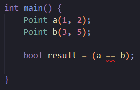

Перегрузка операторов
Теория, примеры и иллюстрации по теме.
Перегрузка функции методов и операторов
Перегрузка операторов позволяет задать операции для объектов пользовательских типов, например сравнение и сложение.
Перегрузка =
#include <iostream>
class MyClass {
public:
int* data;
int copy_size;
MyClass(int size) { // Constructor
std::cout << "Constructor called\n";
data = new int[size];
copy_size = size;
for (int i = 0; i < size; i++) {
data[i] = i;
}
}
MyClass(const MyClass& other) { // Copy constructor
std::cout << "Copy called\n";
copy_size = other.copy_size;
data = new int[copy_size];
for (int i = 0; i < copy_size; i++) {
data[i] = other.data[i];
}
}
MyClass& operator=(const MyClass& other) { // Copy assignment
std::cout << "Operator= called\n";
if (this == &other) {
return *this; // защита от самоприсваивания
}
delete[] data;
// Копируем размер и данные
copy_size = other.copy_size;
data = new int[copy_size];
for (int i = 0; i < copy_size; i++) {
data[i] = other.data[i];
}
return *this;
}
~MyClass() { // Destructor
std::cout << "called Destructor\n";
delete[] data;
}
};
int main() {
MyClass a(10);
MyClass b(5);
a = b;
}Перегрузка == и !=

bool operator== (const Point& other) {
return this->x == other.x && this->y == other.y;
}and
bool operator!= (const Point& other) {
return !(this->x == other.x && this->y == other.y);
}Перегрузка + - / *
int operator+(const Point& other) {
return this->x + other.x + this->y + other.y;
}
int answer = (a + b);А если нужно так ----------- Point c = a + b;
Point operator+(const Point& other){
Point temp;
temp.x = this->x + other.x;
temp.y = this->y + other.y;
return temp;
}Перегрузка ++ -- ...
Point& operator++() {
this->x++; // or
this->y += 1;
return *this;
}
++a;А если нужно a++
Point& operator++(int value) {
this->x++; // or
this->y += 1;
return *this;
}А если так Point b = a++;
Point operator++(int value) {
Point temp(*this);
this->x++;
this->y++;
return temp;
}Перегрузка []
#include <iostream>
class Test {
public:
int& operator[](int index){
return arr[index];
}
private:
int arr[5]{1, 2, 3, 4, 5};
};
int main() {
Test a;
std::cout << a[1] << '\n';
}Операторы: Арифмитические Битовые Логические Перегрузка операторов: Операторы .... нельзя перегружать ostream - глобальный поток вывода для cout и